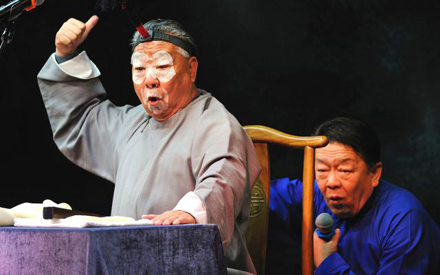
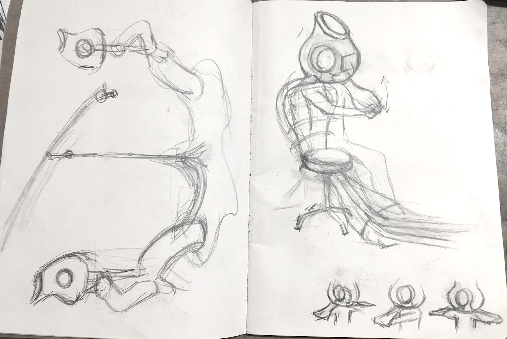
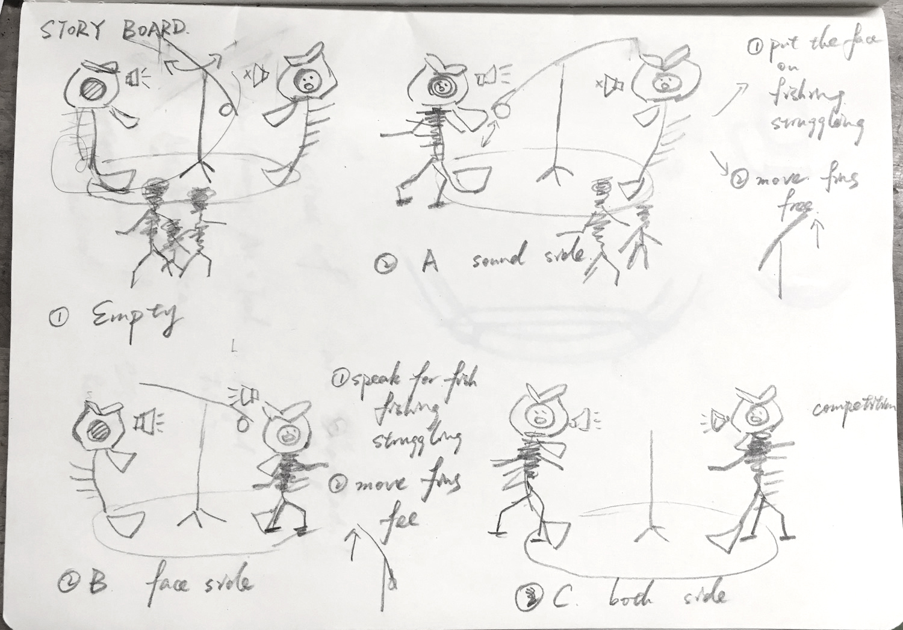
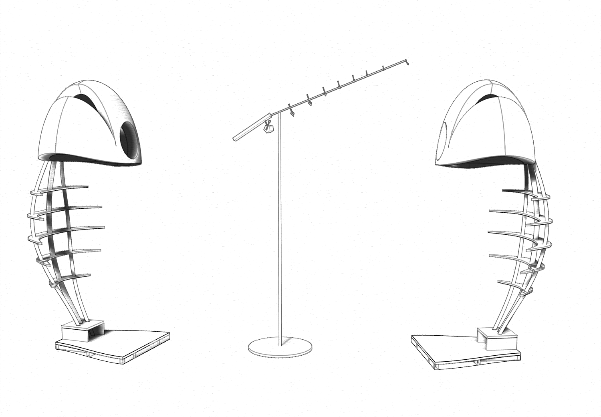
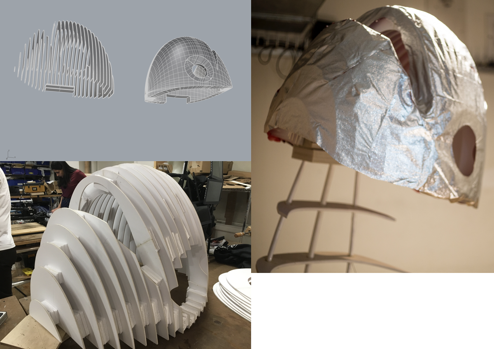
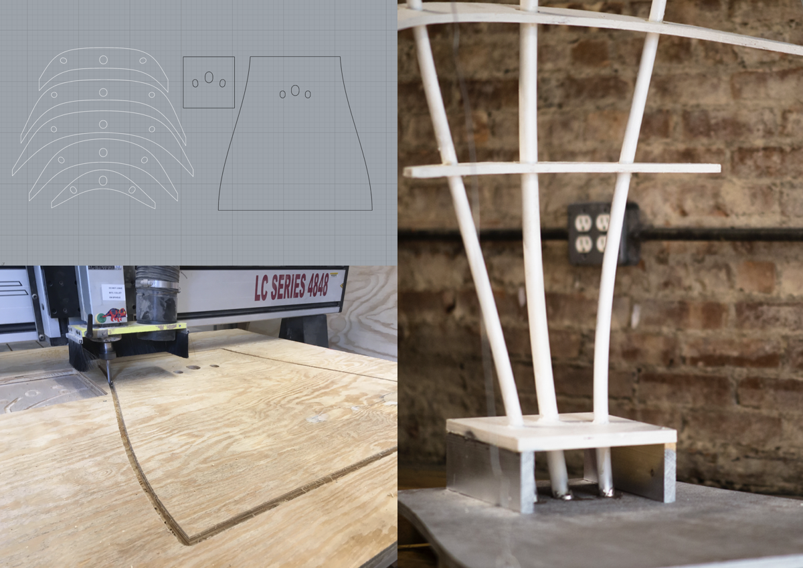

SELF POOL
» Individual Work » 2018 Spring - Current » Exhibited @Tisch School of the Arts Lobby
SELF POOL is an interactive collection of sculptures that invites the audiences to make a choice from two fishes in the same pool under the confusion of which one is the real "fish".
In this surviving game, a fishing rod is standing in the middle of the two fish sculptures and each fish only owns part of the self. One is speaking with the absence of a face, asking viewers to come in help and not look at the other side, while a face shown on a screen is embedded in another’s head, silently moving its mouth. The power is open to the audiences. They need to reflect on which side them believe more in representing ego, the face or the voice.
In order to save one side, audiences have to put their head into the fish head and lend a part of their own body. For the face-side, audiences need to accurately read the English scripts on the hidden screen in fish head and be judged by speech recognition. For the voice-side, audiences’ faces are asked to be put at the right position and fill the hole. Fishes get power based on how fast people finish the line or how long they keep their face still. This power is shown by the spinning fishing rod which will fish the less powerful side.
SELF POOL explores an interaction to get audiences become performers and a part of the project. The concept is about the complexity of self and the eternal confusion of it with misexpression and misunderstanding, where languages, faces, tones are just different mediums. Here self is demonstrated as a pool and moreover as a container of both the mobile “others” and the immobile anima. Shown as two fishes, different personae contained in one self are completed by the presence of “others”.
Fabrication Collaborator: Chester Dols
Audiences in documentation: Tiri Kananuruk, Roland Arnoldt, Amena Hayat
Main Tools
Speech Recognition | Facial Recognition | Rhino | CNC & Lasercutting | Arduino
INSTALLATION
{kind=link}
{kind=link}
{kind=link}
{kind=link}
{kind=link}
{kind=link}
{kind=link}
{kind=link}
INSPIRATION
The idea was inspired by Shuang-Huang, a two-man act, where one actor hides behind the other one speaking or singing while the actor in the front does the acting silently.
During the performance, two actors consist one collective body and take use of the confusion of which one is the more dominant self.
DESIGN
Design started with the idea of seperating voice and face into two bodies and get the audiences complete the collective bodies.
Sketch - Early design
Storyboard
RHINO to FAB


PROCESS & TESTS
{kind=link}
{kind=link}
{kind=link}
{kind=link}
{kind=link}
PROJECT PRESENTATION | TALK
PROJECT PRESENTATION at ITP THESIS WEEK 2018